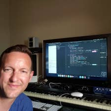

Neil M. Ryan
Resume
Bloom Energy Sr. Customer Service Specialist (07/2011 ~ Present)
Front Desk Administration; office management support, facilities maintenance, vendor relations.
Hazardous waste removal document process management; DOT Certified.
Visa/Passport management; coordinated process for travelling personnel.
CEO Support; task mastering for priority business requests and personal assistant services.
Google Executive Receptionist (11/2006 ~ 07/2011)
Receptionist for the executive building at world headquarters (CEO, Founders and EMG).
Support Team Member; trained and supported a sustained ~40 active receptionists/telephone operators.
Main-line operator; at the time voice of Google’s answering machine.
Delivered presentations on Google’s history, business model and culture to hundreds of tours.
Executive Office Liaison; facilitated call-center/fax/mail/visitor elevations to the CEO’s office.
Aced Google’s Administrative Assistant Intelligence/Aptitude Test.
Natural Wonders | Sales Associate | August 2000 ~ August 2001
Westfield Valley Fair | Customer Service Representative | July 1999 ~ July 2000
Greg Castella’s Catered Too | Catering Associate | Spring 1999 (Seasonal)
Cherry Hill Photography | Assistant Manager | Fall 1998 (Seasonal)
Intensive Major Program, College and Departmental Honors (3.69)
Honors on the senior comprehensive exam (95th percentile).
Internship in the cognitive psychology laboratory; Recruitment and direction of subjects across multiple trials in an information processing study of A/V systems related to speech perception.
Designed/coordinated a study to evaluate the effectiveness of persuasion tactics rooted in evolutionary theory and based in a social psychology context, nominated for honors.
Senior seminar on early childhood education with relationship to law and public policy.
Active Member of Psi Chi International Honors Society.
AA University Studies, Shasta College, Class of 2004
Mathematics Tutor; Pre-Calculus, Trigonometry, Statistics and Algebra.
ESL Tutor; Designed lesson plan for basic English proficiency in Spanish speaking students.
Trained dogs for adoption: nurtured socialization and obedience to increase adoption rates.
Award for Outstanding Achievement, Alpha Gamma Sigma Honors Society.
General
OSX, Windows, Google Apps, Microsoft Office Suite.
Audio Engineering Hardware and Software Protocols and Applications; Pro Tools, Komplete, Reason.
Pianist, Poker Player, Aikido Practitioner, Swimmer, Hiker; annual trips to Yosemite’s Half-Dome.
Roberta Jones Junior Theater from 1987-1995 averaging three performances per year.
Analytical Reasoning; LSAT training undertaken, proctored test score of 170 (98th percentile).
